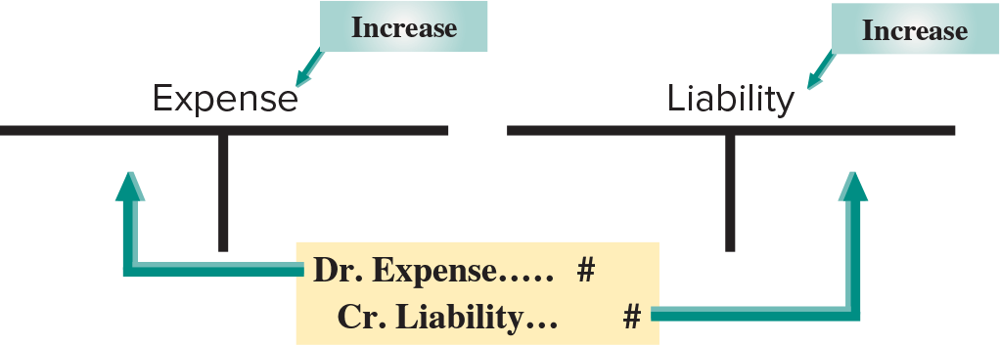
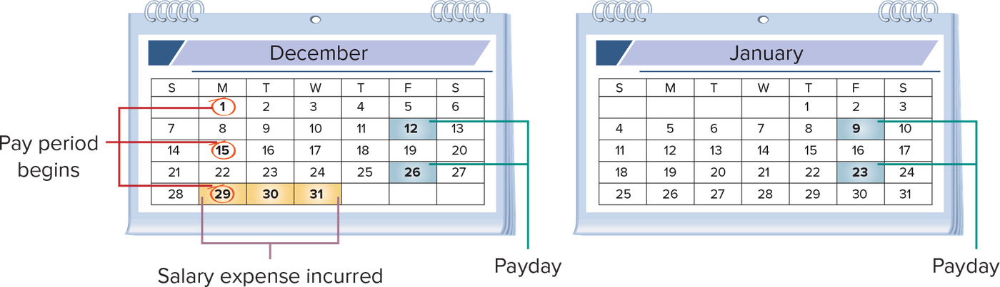
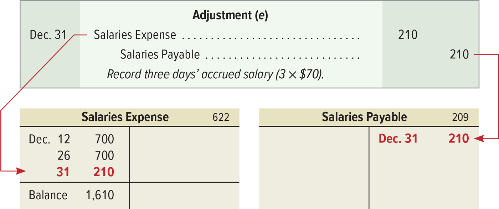
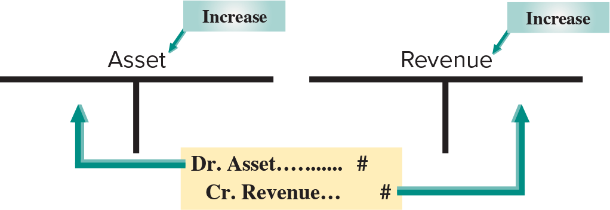
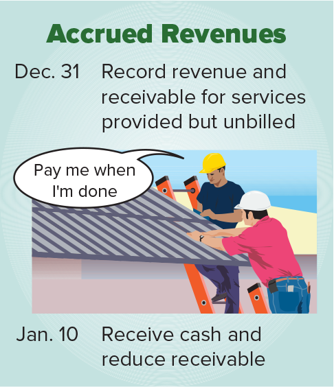
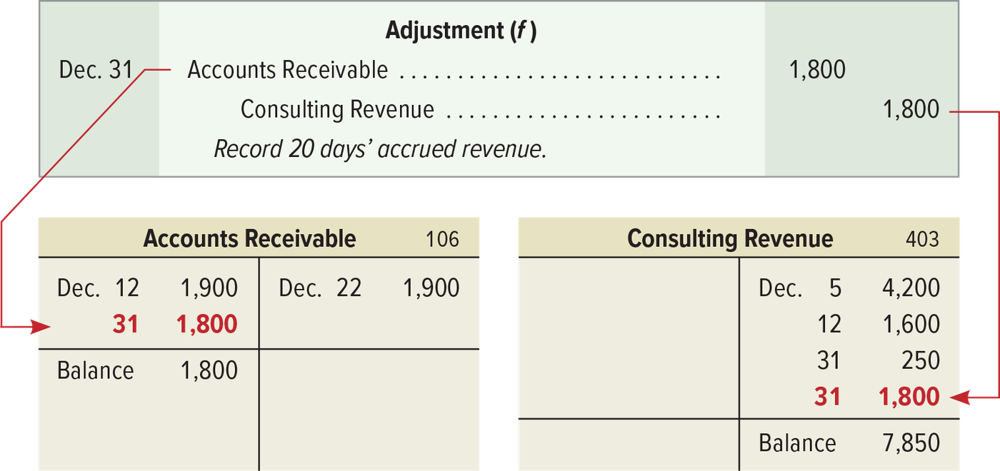
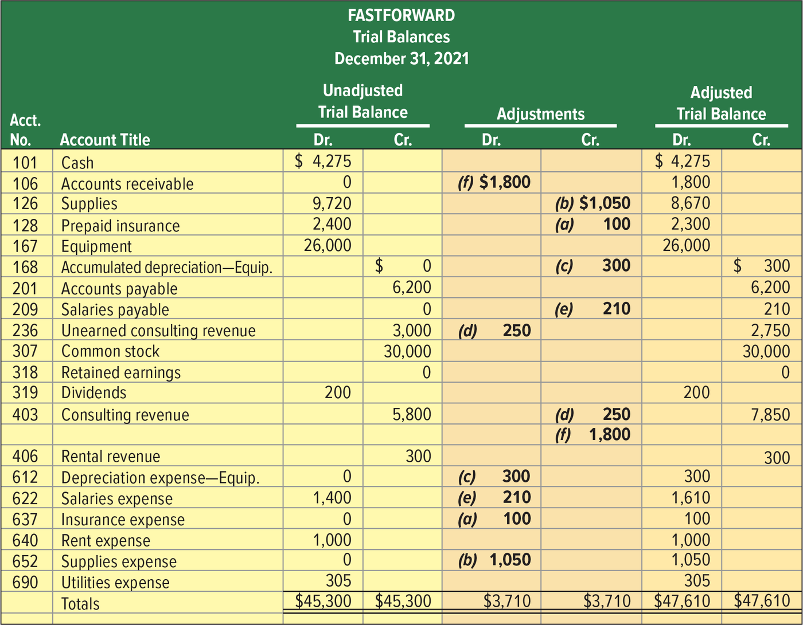
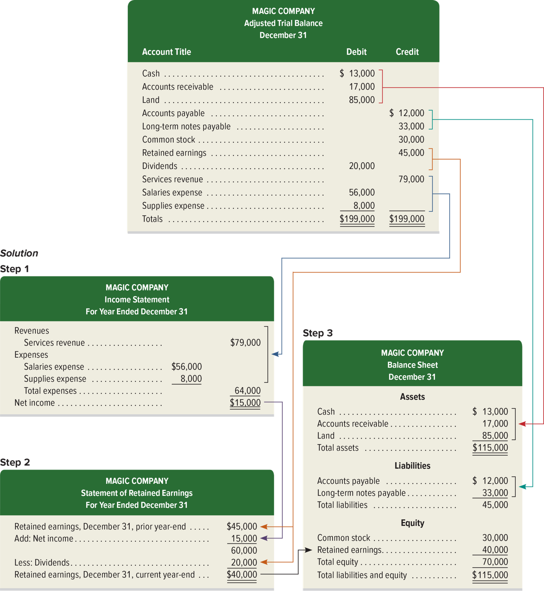

Chapter 3 — Accrued Expenses, Accrued Revenues, and the Adjusted Trial Balance
ACCT 203 · Principles of Financial Accounting · Chapter 3: Adjusting Accounts for Financial Statements · Section 3 of 4:
Accrued Expenses, Accrued Revenues, and the Adjusted Trial Balance
Objective P3: Prepare adjusting entries for accrued expenses.
Objective P4: Prepare adjusting entries for accrued revenues.
Objective P5: Prepare financial statements from an adjusted trial balance.
This section is “the work is done, but the money has not moved yet” — and then you build the financial statements
In the previous lesson you learned deferrals: the cash moves before the expense or revenue is
recognized. This lesson is the exact opposite —
accruals: the expense or revenue has already happened in the period, but the cash moves later, and nobody has written any
entry in the books. There are two types: accrued expenses (objective P3) and accrued revenues (objective P4).
With them you complete the four adjustments, then you collect them in the adjusted trial balance
and build the financial statements from it in a fixed order (objective P5).
Focus from now on three things the exam loves: (1) an adjusting entry for accruals never touches Cash — an accrued expense is matched with a liability (a payable), and an accrued revenue is matched with an asset (a receivable). (2) On the payment or receipt day in the next period, the entry splits the amount: one part closes the old liability or asset, and the other part is the expense or revenue of the new period. (3) The order of the statements: income statement → statement of retained earnings → balance sheet. All the numbers come from the same company, FastForward, and they all come together at the end of the lesson in Exhibit 3.13 and Exhibit 3.14.
Accrued expenses = costs that happened in the period, but are not paid and not recorded. The adjustment: debit the expense, credit the liability — and both go up.
The book defines them as costs that are incurred in a period, and that are both unpaid and unrecorded. They have a second name: accrued liabilities — because there is a debt behind them. They are reported on the income statement for the period when they happened, not the period when they are paid.
The framework: the adjusting entry for accrued expenses increases an expense account (income statement) and increases a liability account (balance sheet) — as Exhibit 3.9 shows. In other words, it recognizes an expense that happened in the period but is not paid yet.
The common examples are four: salaries, interest, rent, and taxes. The book explains with only two examples: salaries (here) and interest (the next concept).

Two T-accounts: Expense on the left and Liability on the right, and above each one the word Increase. Below them, a yellow box holds the entry: Dr. Expense… # and Cr. Liability… #. The debit arrow goes up to the debit side (left) of Expense, and the credit arrow goes up to the credit side (right) of Liability. How to read it: the expense increases with a debit, and the liability increases with a credit — both are increases; no account goes down.
FastForward's employee earns $70 per day, or $350 for a five-day workweek that starts on Monday and ends on Friday. We follow the three steps:
| Step | What you do | In the salaries example |
|---|---|---|
| Step 1 | What is the balance now? | The employee is paid every two weeks on Friday. On December 12 and 26 the salaries were paid, recorded in the journal, and posted to the ledger. So the days after December 26 have no entry at all: Salaries Payable = $0. |
| Step 2 | What should it be? | The calendar in Exhibit 3.10 shows three working days after the December 26 payday: 29, 30, and 31. The employee earned three days' salary by the end of work on Wednesday, December 31, and this salary is not paid and not recorded. So the company must report the added expense and liability: 3 × $70 = $210. |
| Step 3 | The adjusting entry | below ↓ |

Two calendar pages: December and January. In December: Mondays 1, 15, and 29 are circled = Pay period begins (each pay period is two weeks). Fridays 12 and 26 are shaded = Payday. And 29, 30, and 31 are colored yellow = Salary expense incurred (salary that happened but is not paid). In January: the paydays are Friday 9 and 23. How to read it: the last pay period of December starts on the 29th and ends and is paid on January 9 — so three of its days are in December and seven are in January. What they ask: count the working days between the last payday and the end of the period.
| Date | Account titles and explanation | Debit | Credit |
|---|---|---|---|
| Dec. 31 | Adjustment (e) — Salaries Expense | 210 | |
| Salaries Payable | 210 | ||
| Record three days’ accrued salary (3 × $70). |
Salaries Expense went up → an expense increases with a debit; Salaries Payable (a liability) went up → a liability increases with a credit. The effect on the equation: Assets 0 = Liabilities +210 + Equity −210 (the expense reduces equity). And notice: there is no cash in the entry.

On top is the entry Adjustment (e), and under it the posting to two accounts. The red numbers = what comes from the adjusting entry. The two tables below are the same two accounts.
| Salaries Expense · 622 | |
|---|---|
| Debit | Credit |
| Dec. 12 700 | |
| Dec. 26 700 | |
| Dec. 31 210 | |
| Balance 1,610 | |
| Salaries Payable · 209 | |
|---|---|
| Debit | Credit |
| Dec. 31 210 | |
| Balance 210 | |
Check: 700 + 700 + 210 = 1,610 ✓. The 700 twice = two weeks' salary paid on the 12th and on the 26th (10 × $70), and the 210 = the adjustment.
After the adjustment: salaries expense of $1,610 is reported on the December income statement, and $210 of salaries payable (a liability) is reported in the balance sheet. The book highlights the adjustment like this:
| Before Adjustment | Adjustment | After Adjustment |
|---|---|---|
| Salaries Payable = $0 | Add $210 to Salaries Payable Add $210 to Salaries Expense |
Salaries Payable = $210 |
| Reports $0 from employee salaries incurred but not yet paid in cash. | Record 3 days’ salaries owed, but not yet paid, at $70 per day. | Reports $210 salaries payable to employee but not yet paid. |
If you do not make the adjustment (Exhibit 3.12): the expense is too small (expense understated) and the liability is too small (liability understated) — by 210 in our example. The result: net income comes out higher than the correct figure, and so does equity.
Accrued expenses, or accrued liabilities, are costs that are incurred in a period that are both unpaid and unrecorded. Accrued expenses are reported on the income statement for the period when incurred.
Adjusting entries for recording accrued expenses increase the expense (income statement) account and increase a liability (balance sheet) account, as shown in Exhibit 3.9. This adjustment recognizes expenses incurred in a period but not yet paid. Common examples of accrued expenses are salaries, interest, rent, and taxes.
Salaries expense of $1,610 is reported on the December income statement, and $210 of salaries payable (liability) is reported in the balance sheet.
- The credit is a liability, not cash: the adjusting entry = debit Salaries Expense, credit Salaries Payable. A choice with “credit Cash” is wrong, because the money has not left yet.
- Do not mix it up with a deferral: prepaid expense (you paid before) = debit the expense, credit an asset. Accrued expense (you will pay later) = debit the expense, credit a liability. The debit side is the same; the whole difference is in the credit.
- The expense is reported in the period when it happened (December), not when it is paid (January). A choice that says “record it when it is paid” is the cash basis, not the accrual basis.
- The days: December 29, 30, and 31 = 3 working days (Monday to Wednesday) — not 5 and not 10. And the calculation is 3 × $70 = $210.
- The Salaries Expense balance after the adjustment is $1,610 (1,400 + 210) — a choice that gives only $210 for the expense forgot the salaries paid before. The $210 is the balance of Salaries Payable.
- Another name: accrued expenses = accrued liabilities. The same thing.
Interest builds up as time passes, so at the end of the period you record what built up since the last payment: principal × annual rate × fraction of the year. And on payday in the next period: debit the old liability + debit the new period's expense, credit Cash.
Companies record accrued interest on notes payable (loans) and other long-term liabilities at the end of every period. Why? Because interest expense is incurred as time passes. So if the interest is not paid exactly on the last day of the period, you need an adjustment for the interest that happened but is not paid — from the most recent payment date up to the end of the period. The formula:
The book's example: a company has a $6,000 loan from a bank at 5% annual interest. The accrued interest for 30 days:
$6,000 × 0.05 × 30 ∕ 360 = $25
| Date | Account titles and explanation | Debit | Credit |
|---|---|---|---|
| — | Interest Expense | 25 | |
| Interest Payable | 25 |
Interest Expense went up → an expense increases with a debit; Interest Payable (a liability) went up → it increases with a credit. (The book gives no date for this example.)
The book's note (Point): interest computations use a 360-day year, called the bankers’ rule — that is why the fraction is 30/360 and not 30/365.
Accrued expenses at the end of one period result in a cash payment in a future period. Remember: FastForward recorded accrued salaries of $210. On January 9 — the first payday of the new period — the following entry settles the liability (salaries payable) and records salaries expense for seven days of work in January:
| Date | Account titles and explanation | Debit | Credit |
|---|---|---|---|
| Jan. 9 | Salaries Payable (3 days at $70 per day) | 210 | |
| Salaries Expense (7 days at $70 per day) | 490 | ||
| Cash | 700 | ||
| Paid two weeks’ salary including three days accrued. |
The liability went down → Salaries Payable is debited; January's expense went up → Salaries Expense is debited; and Cash (an asset) went down → it is credited. Check: 210 + 490 = 700 ✓. Effect: Assets −700 = Liabilities −210 + Equity −490.
- $210 debit = the payment of the liability for the three days that were accrued on December 31.
- $490 debit = the salary for the first seven working days of January (including the New Year's Day holiday), as an expense of the new period.
- $700 credit = all the cash paid to the employee (two weeks = 10 × $70).
This is not an adjusting entry — it is a normal payment entry, and that is why it has Cash.
Each case is separate, the adjustment is on December 31, and we assume no other adjusting entries are made during the year:
1. Salaries Payable: at year-end, salaries expense of $5,000 has happened but is not paid to the employees yet. Step 1: Salaries Payable = $0 · Step 2: it should be $5,000 (not recorded yet) · Step 3:
| Date | Account titles and explanation | Debit | Credit |
|---|---|---|---|
| Dec. 31 | Salaries Expense | 5,000 | |
| Salaries Payable | 5,000 | ||
| Record accrued salaries expense. |
An expense went up with a debit, and a liability went up with a credit.
2. Interest Payable: the company has a mortgage payable (a property loan) that has incurred $1,000 in annual interest that is neither recorded nor paid, and it will pay it on January 3 of next year. Step 1: Interest Payable = $0 · Step 2: it should be $1,000 · Step 3:
| Date | Account titles and explanation | Debit | Credit |
|---|---|---|---|
| Dec. 31 | Interest Expense | 1,000 | |
| Interest Payable | 1,000 | ||
| Record interest incurred but not yet paid. |
The interest happened this year, so its expense belongs to this year (debit), and the debt for it is a liability (credit) — even if the payment is only three days later.
Companies accrue interest expense on notes payable (loans) and other long-term liabilities at the end of a period. Interest expense is incurred as time passes. Unless interest is paid on the last day of an accounting period, we need to adjust for interest expense incurred but not yet paid. This means we must accrue interest cost from the most recent payment date up to the end of the period. The formula for computing accrued interest is
Principal amount owed × Annual interest rate × Fraction of year since last payment
Interest computations use a 360-day year, called the bankers’ rule.
Accrued expenses at the end of one accounting period result in cash payment in a future period(s).
- Do not forget the fraction: the full yearly interest (in the example 6,000 × 0.05 = 300) is not the accrued amount. The accrued amount = only the part of the year since the last payment ($25 for 30 days).
- 360, not 365: the bankers’ rule. A choice with a strange number full of decimals (computed on 365) is a trap.
- The starting point = the last payment date for interest — not always the date the loan was taken.
- Payday (Jan. 9): do not record all 700 as expense — 210 of it was already recorded as expense in December, and if you record it again the expense is doubled. The entry is a compound one: Salaries Payable 210 + Salaries Expense 490, credit Cash 700.
- Another mistake: “debit Salaries Payable 700” — the liability was only 210.
- The 7 days in January include the New Year's Day holiday — the book counts it with the paid working days.
Accrued revenues = revenues that were earned in the period, but are not recorded and not received. The adjustment: debit an asset (a receivable), credit the revenue — and both go up.
The book defines them as revenues earned in a period that are both unrecorded and not yet received in cash (or other assets). The book's example: a technician who bills customers after the job is done. If one-third of the job is complete by the end of the period, he must record one-third of the expected billing as revenue in that period — even though there is no billing or collection. Their second name is accrued assets.
The framework: the adjusting entry increases a revenue account (income statement) and increases an asset account (balance sheet) — Exhibit 3.11. Accrued revenues usually come from four sources: services, products, interest, and rent. The book explains with two examples: services and interest.

Exactly the same shape as Exhibit 3.9, but the two accounts changed: Asset on the left and Revenue on the right, and above each one Increase. The entry: Dr. Asset… # and Cr. Revenue… #. How to read it: the asset increases with a debit, and the revenue increases with a credit. Compare: in 3.9 the expense is the debit and the liability the credit; here the asset is the debit and the revenue the credit.
Accrued revenues are recorded when the adjusting entries are made at the end of the period. They are earned but not recorded for one of two reasons — either the buyer has not paid yet, or the seller has not billed him yet.
| Step | In the FastForward example |
|---|---|
| Step 1 | In the second week of December, FastForward agreed to provide 30 days of consulting services to a fitness club for a fixed fee of $2,700 (or $90 per day), from December 12 through January 10. The club pays all $2,700 on January 10 when the service is complete. So the balance now: Accounts Receivable = $0. |
| Step 2 | At December 31, 20 days of services have been provided. The service is not all done, so the company has neither billed the club nor recorded anything. But it has earned two-thirds of the fee: $2,700 × 20 ∕ 30 = $1,800. The revenue recognition principle requires the $1,800 on the December income statement, and the balance sheet shows that the club owes FastForward $1,800. |
| Step 3 | The adjusting entry ↓ |

A picture titled Accrued Revenues: at the top, Dec. 31 = record revenue and receivable for services provided but unbilled. In the middle, workers fix a roof and one says Pay me when I'm done. At the bottom, Jan. 10 = receive cash and reduce the receivable. How to read it: two steps in order — an adjustment in December, and a collection in January.
| Date | Account titles and explanation | Debit | Credit |
|---|---|---|---|
| Dec. 31 | Adjustment (f) — Accounts Receivable | 1,800 | |
| Consulting Revenue | 1,800 | ||
| Record 20 days’ accrued revenue. |
Accounts Receivable (an asset) went up → debit; Consulting Revenue went up → a revenue increases with a credit. Effect: Assets +1,800 = Liabilities + Equity +1,800. And again there is no cash.

On top is the entry Adjustment (f), and under it the two accounts after posting (red = the adjustment):
| Accounts Receivable · 106 | |
|---|---|
| Debit | Credit |
| Dec. 12 1,900 | Dec. 22 1,900 |
| Dec. 31 1,800 | |
| Balance 1,800 | |
| Consulting Revenue · 403 | |
|---|---|
| Debit | Credit |
| Dec. 5 4,200 | |
| Dec. 12 1,600 | |
| Dec. 31 250 | |
| Dec. 31 1,800 | |
| Balance 7,850 | |
Check: 1,900 − 1,900 + 1,800 = 1,800 ✓ and 4,200 + 1,600 + 250 + 1,800 = 7,850 ✓. The 250 = adjustment (d) from the previous lesson (unearned revenue), so this account has two adjustments.
After the adjustment: accounts receivable are reported on the balance sheet at $1,800, and the $7,850 total of consulting revenue is reported on the income statement:
| Before Adjustment | Adjustment | After Adjustment |
|---|---|---|
| Accounts Receivable = $0 | Add $1,800 to Accounts Receivable Add $1,800 to Consulting Revenue |
Accounts Receivable = $1,800 |
| Reports $0 from revenue earned but not yet received in cash. | Record 20 days of earned revenue, which is 20 ∕ 30 of total contract. | Reports $1,800 in accounts receivable from services provided. |
If you do not make the adjustment (Exhibit 3.12): the asset is too small (asset understated) and the revenue is too small (revenue understated) — by 1,800 in our example. The result: net income comes out lower than the correct figure.
Interest: if the company holds notes receivable (written promises to pay) that give it interest, it must adjust the accounts and record the interest that is earned but not collected. The entry is like the accrued services entry: debit Interest Receivable (asset), credit Interest Revenue.
The day the cash comes in (Future Cash Receipt of Accrued Revenues): accrued revenues at the end of one period result in a cash receipt in a future period. When FastForward receives $2,700 on January 10 for the entire contract, it makes an entry to remove the accrued asset (accounts receivable) and record January's revenue:
| Date | Account titles and explanation | Debit | Credit |
|---|---|---|---|
| Jan. 10 | Cash | 2,700 | |
| Accounts Receivable (20 days at $90 per day) | 1,800 | ||
| Consulting Revenue (10 days at $90 per day) | 900 | ||
| Received cash for accrued asset and recorded earned consulting revenue for January. |
Cash went up → debit $2,700; the receivable is closed → credit $1,800 (an asset decreases with a credit); and January's revenue → credit $900. Check: 1,800 + 900 = 2,700 ✓. Effect: Assets +2,700 −1,800 = Liabilities + Equity +900.
Side box (Analytics Insight): companies like Microsoft, Subway, and Expedia accept Bitcoin (a digital currency) as payment, and one Bitcoin has been worth between $500 and $20,000 in recent years — so the company must ensure its accounting system handles the rapid changes in value when it sets a sales price.
Each case on its own, and the adjustment is on December 31:
1. Accounts Receivable: at year-end, the company has completed services of $1,000 for a client, but has not billed the client yet. Step 1: Accounts Receivable = $0 · Step 2: it should be $1,000 · Step 3:
| Date | Account titles and explanation | Debit | Credit |
|---|---|---|---|
| Dec. 31 | Accounts Receivable | 1,000 | |
| Services Revenue | 1,000 | ||
| Record accrued revenue. |
An asset went up with a debit, and a revenue went up with a credit.
2. Interest Receivable: at year-end, the company has earned $500 of interest from its investments in government bonds, but has not recorded it. Step 1: Interest Receivable = $0 · Step 2: it should be $500 · Step 3:
| Date | Account titles and explanation | Debit | Credit |
|---|---|---|---|
| Dec. 31 | Interest Receivable | 500 | |
| Interest Revenue | 500 | ||
| Record accrued interest. |
Interest Receivable is an asset that went up with a debit, and Interest Revenue is a revenue that went up with a credit.
Accrued revenues are revenues earned in a period that are both unrecorded and not yet received in cash (or other assets). Accrued revenues are also called accrued assets.
The adjusting entries for accrued revenues increase a revenue (income statement) account and increase an asset (balance sheet) account, as shown in Exhibit 3.11. Accrued revenues usually come from services, products, interest, and rent.
These accrued revenues are earned but unrecorded because either the buyer has not yet paid or the seller has not yet billed the buyer.
If a company is holding notes receivable that produce interest revenue, we must adjust the accounts to record any earned and yet uncollected interest revenue. Specifically, debit Interest Receivable (asset) and credit Interest Revenue.
Accrued revenues at the end of one accounting period result in cash receipts in a future period(s).
- Do not mix it up with unearned revenue: unearned revenue (the money came before) = debit a liability, credit the revenue. Accrued revenue (the money comes after) = debit an asset, credit the revenue. The credit is the same; the difference is in the debit.
- The revenue is recorded even with no bill and no collection — the condition is that it is earned. A choice that says “do not record it until you send the bill” is wrong.
- The fraction: days provided ÷ days in the contract = 20/30 → $1,800. The 10/30 ($900) is January's share.
- Cash day (Jan. 10): the $2,700 is not all January revenue — $1,800 was already recorded as revenue in December, so it is closed out of Accounts Receivable. January's revenue is only $900. If you record 2,700 as revenue, the revenue is counted twice.
- The second names give away the other account in the entry: accrued revenues = accrued assets; accrued expenses = accrued liabilities.
Every adjusting entry = an income statement account (revenue or expense) + a balance sheet account (asset or liability), and it never touches Cash. Deferrals: the cash comes before the recognition; accruals: the cash comes after.
Exhibit 3.12 summarizes the four adjustments. And the book's rule: every adjusting entry affects one or more income statement accounts (revenue or expense) and one or more balance sheet accounts (asset or liability), but never the Cash account.
![Exhibit 3.12 summarizes the four adjustments: Deferrals mean cash is paid or received before the expense or revenue is recognized, and Accruals mean cash is paid or received after; for deferral of expense the entry is Dr. Expense increase, Cr. Asset decrease, and before adjusting the expense is understated and the asset overstated; for deferral of revenue it is Dr. Liability decrease, Cr. Revenue increase, with the liability overstated and revenue understated; for accrued expense it is Dr. Expense increase, Cr. Liability increase, with the expense understated and liability understated; for accrued revenue it is Dr. Asset increase, Cr. Revenue increase, with the asset understated and revenue understated.](../img/acct203/exhibit-3-12.png)
On the left, two boxes: Deferrals → Paid (or received) cash before expense (or revenue) recognized, and Accruals → the same sentence but after. Then three columns: Adjustments (the name of the adjustment) · Adjusting Entry (the entry) · BEFORE Adjusting (what is wrong in the statements before the adjustment). Next to Cr. Asset* there is a star (*) = for depreciation the credit goes to Accumulated Depreciation (a contra asset). And next to the two deferrals there is a mark (†) = the exhibit supposes the deferred expense was first recorded as an asset, and the deferred revenue was first recorded as a liability. What they ask: the BEFORE Adjusting column — “if the company forgot this adjustment, what is overstated and what is understated?”
The full table of the four adjustments (from Exhibit 3.12 + the FastForward examples in the two lessons):
| Adjustment | The situation before adjusting | Adjusting entry | If you do not make it (BEFORE Adjusting) | The book's example |
|---|---|---|---|---|
| Deferral of expense (prepaid) |
you paid the cash before the expense, and recorded it as an asset | Dr. Expense ↑ Cr. Asset* ↓ |
Expense understated Asset overstated |
(a) insurance 100 · (b) supplies 1,050 · (c) depreciation 300 |
| Deferral of revenue (unearned) |
you received the cash before the revenue, and recorded it as a liability | Dr. Liability ↓ Cr. Revenue ↑ |
Liability overstated Revenue understated |
(d) unearned consulting revenue 250 |
| Accrued expense | the expense happened and the cash is paid later; there is no entry at all | Dr. Expense ↑ Cr. Liability ↑ |
Expense understated Liability understated |
(e) salaries 210 |
| Accrued revenue | the revenue is earned and the cash comes in later; there is no entry at all | Dr. Asset ↑ Cr. Revenue ↑ |
Asset understated Revenue understated |
(f) consulting revenue 1,800 |
A pattern that saves you the last column: before adjusting, the revenue or the expense is always understated in all four. And the balance sheet account: in deferrals it is overstated (there is still an asset or a liability that has partly run out), and in accruals it is understated (the asset or liability was never recorded).
The situation: at year-end, the company president instructs you — the financial officer — not to record the accrued expenses until next year, because they will be paid then. He also tells you to record in this year's sales a new purchase order from a customer, and the merchandise must be delivered two weeks after the year-end. If you do what he says, the company reports a net income instead of a net loss. What do you do?
The book's answer: omitting accrued expenses and recognizing revenue early mislead the users of the financial statements. The first step: explain to the president what is required. If he persists, you might talk to the lawyers and any auditors involved.
Exhibit 3.12 summarizes the four adjustments. Each adjusting entry affects one or more income statement (revenue or expense) accounts and one or more balance sheet (asset or liability) accounts, but never the Cash account.
Omitting accrued expenses and recognizing revenue early mislead financial statement users.
- “Never the Cash account”: any choice for an adjusting entry that has Cash is wrong right away. Cash appears only in the payment or receipt entry (like Jan. 9 and Jan. 10).
- Deferrals = cash before; Accruals = cash after. The exam swaps the two words.
- Read the question: “failed to record accrued salaries” → expenses understated, liabilities understated (and net income overstated). “failed to record accrued revenue” → assets understated, revenues understated.
- For depreciation (*) the credit is Accumulated Depreciation, not Equipment itself.
- The mark (†): if the deferral was first recorded as an expense or revenue instead of an asset or liability, the adjusting entry changes — that is the topic of Appendix 3A.
- Decision Ethics: the answer is not “I do it because the president said so” and not “I quit at once” — the book: explain what is required, and if he persists, talk to the lawyers and auditors.
Unadjusted trial balance = the accounts and their balances before the adjustments; adjusted trial balance = after you record and post the adjustments. From the adjusted one you build the statements in order: income statement → retained earnings → balance sheet.
The book's two definitions:
- Unadjusted trial balance = a list of accounts and balances before the adjustments are recorded.
- Adjusted trial balance = a list of accounts and balances after the adjusting entries have been recorded and posted to the ledger.
Exhibit 3.13 shows both for FastForward at December 31, 2021, with two adjustment columns between them. The order of the accounts usually matches the order in the chart of accounts, and new accounts usually arise from the adjustments — in the table you see them with a 0 balance before adjusting (like Salaries payable and Insurance expense).

Three pairs of columns (debit and credit): Unadjusted Trial Balance · Adjustments · Adjusted Trial Balance. Each adjustment in the middle has a letter, (a) to (f), that links it to its entry. The same numbers are copied in the table below.
| Acct. | Account Title | Unadjusted | Adjustments | Adjusted | |||
|---|---|---|---|---|---|---|---|
| Dr. | Cr. | Dr. | Cr. | Dr. | Cr. | ||
| 101 | Cash | 4,275 | 4,275 | ||||
| 106 | Accounts receivable | 0 | (f) 1,800 | 1,800 | |||
| 126 | Supplies | 9,720 | (b) 1,050 | 8,670 | |||
| 128 | Prepaid insurance | 2,400 | (a) 100 | 2,300 | |||
| 167 | Equipment | 26,000 | 26,000 | ||||
| 168 | Accumulated depreciation—Equip. | 0 | (c) 300 | 300 | |||
| 201 | Accounts payable | 6,200 | 6,200 | ||||
| 209 | Salaries payable | 0 | (e) 210 | 210 | |||
| 236 | Unearned consulting revenue | 3,000 | (d) 250 | 2,750 | |||
| 307 | Common stock | 30,000 | 30,000 | ||||
| 318 | Retained earnings | 0 | 0 | ||||
| 319 | Dividends | 200 | 200 | ||||
| 403 | Consulting revenue | 5,800 | (d) 250 (f) 1,800 | 7,850 | |||
| 406 | Rental revenue | 300 | 300 | ||||
| 612 | Depreciation expense—Equip. | 0 | (c) 300 | 300 | |||
| 622 | Salaries expense | 1,400 | (e) 210 | 1,610 | |||
| 637 | Insurance expense | 0 | (a) 100 | 100 | |||
| 640 | Rent expense | 1,000 | 1,000 | ||||
| 652 | Supplies expense | 0 | (b) 1,050 | 1,050 | |||
| 690 | Utilities expense | 305 | 305 | ||||
| Totals | $45,300 | $45,300 | $3,710 | $3,710 | $47,610 | $47,610 | |
The six letters = the six adjustments (four types):
| Letter | The entry (debit / credit) | Amount | Type |
|---|---|---|---|
| (a) | Insurance expense / Prepaid insurance | 100 | deferral of expense (Section 2) |
| (b) | Supplies expense / Supplies | 1,050 | deferral of expense (Section 2) |
| (c) | Depreciation expense—Equip. / Accumulated depreciation—Equip. | 300 | deferral of expense — depreciation (Section 2) |
| (d) | Unearned consulting revenue / Consulting revenue | 250 | deferral of revenue (Section 2) |
| (e) | Salaries expense / Salaries payable | 210 | accrued expense (this lesson) |
| (f) | Accounts receivable / Consulting revenue | 1,800 | accrued revenue (this lesson) |
| Total (debits = credits) | 3,710 | 100 + 1,050 + 300 + 250 + 210 + 1,800 | |
How is each number in the last two columns computed? You take the account's balance from Unadjusted and add or subtract the adjustments. The book's example: Supplies has a $9,720 debit before, you take away the $1,050 credit in the adjustments = an $8,670 debit after. An account can have more than one adjustment — like Consulting Revenue: 5,800 + 250 + 1,800 = 7,850. And some accounts need no adjustment at all this period — like Accounts Payable (6,200 before and after).
We can prepare the financial statements directly from the information in the adjusted trial balance. Exhibit 3.14 shows how the balances are transferred with colored lines:
- Red lines: revenue and expense balances → the income statement.
- Green lines: net income and dividends → the statement of retained earnings.
- Blue lines: asset and liability balances → the balance sheet.
- Pink line (in the picture it looks dark red: from $3,585 to Retained earnings on the balance sheet): the ending retained earnings (computed in the statement of retained earnings) → the balance sheet.
![Exhibit 3.14 shows FastForward's adjusted trial balance at December 31, 2021, totaling 47,610, with colored lines carrying revenues and expenses to the income statement, which shows total revenues of 8,150, total expenses of 4,365 and net income of 3,785; net income and dividends of 200 go to the statement of retained earnings, which ends at 3,585; assets, liabilities and common stock go to the balance sheet, which shows total assets of 42,745, total liabilities of 9,160, total equity of 33,585 and total liabilities and equity of 42,745; four boxes list the steps: income statement, statement of retained earnings, balance sheet, and statement of cash flows illustrated later in the book.](../img/acct203/exhibit-3-14.png)
Top right: the adjusted trial balance itself (total $47,610). Top left: four steps — Step 1 the income statement from the revenue and expense accounts · Step 2 the statement of retained earnings from retained earnings and dividends in the trial balance, with net income pulled from step 1 · Step 3 the balance sheet from the assets, liabilities, and common stock, with the updated retained earnings from step 2 · Step 4 the statement of cash flows from the changes in cash (illustrated later in the book). Below are the three statements with their numbers (copied below).
Income Statement
For Month Ended December 31, 2021
| Revenues | ||
| Consulting revenue | $7,850 | |
| Rental revenue | 300 | |
| Total revenues | $8,150 | |
| Expenses | ||
| Depreciation expense—Equipment | 300 | |
| Salaries expense | 1,610 | |
| Insurance expense | 100 | |
| Rent expense | 1,000 | |
| Supplies expense | 1,050 | |
| Utilities expense | 305 | |
| Total expenses | 4,365 | |
| Net income | $3,785 | |
Check: 7,850 + 300 = 8,150 ✓ · 300 + 1,610 + 100 + 1,000 + 1,050 + 305 = 4,365 ✓ · 8,150 − 4,365 = 3,785 ✓.
Statement of Retained Earnings
For Month Ended December 31, 2021
| Retained earnings, December 1 | $ 0 |
| Add: Net income | 3,785 |
| 3,785 | |
| Less: Dividends | 200 |
| Retained earnings, December 31 | $3,585 |
Check: 0 + 3,785 − 200 = 3,585 ✓. The 0 is the Retained earnings balance in the adjusted trial balance (the start of the month).
Balance Sheet
December 31, 2021
| Assets | ||
| Cash | $4,275 | |
| Accounts receivable | 1,800 | |
| Supplies | 8,670 | |
| Prepaid insurance | 2,300 | |
| Equipment | $26,000 | |
| Less accumulated depreciation | 300 | 25,700 |
| Total assets | $42,745 | |
| Liabilities | ||
| Accounts payable | $6,200 | |
| Salaries payable | 210 | |
| Unearned consulting revenue | 2,750 | |
| Total liabilities | 9,160 | |
| Equity | ||
| Common stock | 30,000 | |
| Retained earnings | 3,585 | |
| Total equity | 33,585 | |
| Total liabilities and equity | $42,745 | |
Check: assets 4,275 + 1,800 + 8,670 + 2,300 + 25,700 = 42,745 ✓ · liabilities 6,200 + 210 + 2,750 = 9,160 ✓ · equity 30,000 + 3,585 = 33,585 ✓ · 9,160 + 33,585 = 42,745 = assets ✓. See how all the adjustment numbers showed up: 1,800 receivable, 210 accrued salaries, 2,750 unearned, 25,700 net equipment.
The order: we prepare the statements like this: (1) income statement, (2) statement of retained earnings, (3) balance sheet. The order makes sense because the balance sheet takes information from the statement of retained earnings, and the statement of retained earnings takes information from the income statement. The statement of cash flows is usually the last one prepared.
The book's note (Point): each trial balance amount is used in only one statement.
The task: from Magic Company's adjusted trial balance at December 31, prepare (1) the income statement, (2) the statement of retained earnings, and (3) an unclassified balance sheet. The Retained Earnings balance was $45,000 on December 31 of the prior year.

At the top, the adjusted trial balance: debits $199,000 = credits $199,000. Below it, the solution in three steps, and the colored arrows show you where each account goes.
| Step | The calculation | The result |
|---|---|---|
| 1 Income statement | Services revenue 79,000 − (Salaries expense 56,000 + Supplies expense 8,000 = 64,000) | Net income = $15,000 |
| 2 Retained earnings | 45,000 + 15,000 = 60,000, then 60,000 − 20,000 (Dividends) | end of year = $40,000 |
| 3 Balance sheet | assets: 13,000 + 17,000 + 85,000 (Cash, Accounts receivable, Land) · liabilities: 12,000 + 33,000 (Accounts payable, Long-term notes payable) · equity: 30,000 + 40,000 | assets $115,000 = liabilities 45,000 + equity 70,000 = $115,000 ✓ |
In other words: the $45,000 in the adjusted trial balance is retained earnings at the start of the year — it goes to the statement of retained earnings, not to the balance sheet. The balance sheet takes $40,000 (the new balance).
An unadjusted trial balance is a list of accounts and balances before adjustments are recorded. An adjusted trial balance is a list of accounts and balances after adjusting entries have been recorded and posted to the ledger.
Each amount in the Adjusted Trial Balance columns is computed by taking that account's amount from the Unadjusted Trial Balance columns and adding or subtracting any adjustment(s).
We can prepare financial statements directly from information in the adjusted trial balance.
We prepare financial statements in the following order: (1) income statement, (2) statement of retained earnings, and (3) balance sheet. This order makes sense because the balance sheet uses information from the statement of retained earnings, which in turn uses information from the income statement. The statement of cash flows is usually the final statement prepared.
Each trial balance amount is used in only one financial statement.
- Adjusted = after recording and posting. A choice that says “before adjustments are recorded” describes the unadjusted one.
- The order: income statement → retained earnings → balance sheet, and cash flows last. A choice that starts with the balance sheet is wrong.
- Each number in one statement: Dividends go to the statement of retained earnings — not to the income statement (dividends are not an expense). And Accumulated depreciation goes to the balance sheet, subtracted from Equipment.
- The Retained earnings balance in the trial balance = the opening balance (0 for FastForward, 45,000 for Magic). The balance sheet shows the new balance from the statement of retained earnings (3,585 and 40,000).
- The adjusted trial balance total (47,610) is not total assets (42,745) — the trial balance also has revenues, expenses, and dividends, and accumulated depreciation sits on the credit side.
- Class wording: some class handouts use a sole proprietorship: Owner's Capital instead of Common Stock and retained earnings, and Owner's Withdrawals / Drawing instead of Dividends — so you see a “statement of owner's equity” instead of the statement of retained earnings. Same idea, same order, and the same debit and credit rules: capital is on the common stock side, and withdrawals are on the dividends side.
Test yourself
The questions are in English because the exam is in English. Answer first, then open the solution. If you miss question 1, go back to the interest formula; if you miss question 4, go back to the Exhibit 3.12 table.
- $720
- $59.18
- $60
- $0, because the interest has not been paid yet
Answer
C. 9,000 × 0.08 × 30/360 = 60. The trap in A: this is the full yearly interest — it forgets the “fraction of year since last payment”. B is computed with 365 days (720 × 30/365), but the book uses a 360-day year (the bankers’ rule). And D is cash-basis thinking: the interest happened as time passed, so you record it even if it is not paid.
- Debit Salaries Payable $400 and Salaries Expense $600; credit Cash $1,000
- Debit Salaries Expense $1,000; credit Cash $1,000
- Debit Salaries Payable $1,000; credit Cash $1,000
- Debit Salaries Expense $400 and Salaries Payable $600; credit Cash $1,000
Answer
A. The liability recorded on December 31 = 4 × $100 = $400, so on payday you close it with a debit, and the rest, 1,000 − 400 = 600, is the expense of the new period — the same as the book's January 9 entry (210 + 490 = 700). The trap in B: it counts the 400 as expense twice (once in December and again now). C closes a 1,000 liability, but it was only 400. And D swaps the two amounts.
- Debit Unearned Services Revenue $1,500; credit Services Revenue $1,500
- Debit Cash $1,500; credit Services Revenue $1,500
- Debit Accounts Receivable $6,000; credit Services Revenue $6,000
- Debit Accounts Receivable $1,500; credit Services Revenue $1,500
Answer
D. Accrued revenue: 6,000 × 10/40 = 1,500 — debit an asset (Accounts Receivable), credit revenue. The trap in A: this is the unearned revenue entry — but the customer paid nothing in advance, so there is no liability at all. B has Cash, and an adjusting entry never touches Cash. And C records the whole contract, but only a quarter of it is earned.
- Assets are overstated and revenues are understated
- Assets are understated and revenues are understated
- Liabilities are understated and expenses are understated
- There is no effect, because no cash has been received
Answer
B. This is accrued revenue, and its row in the BEFORE Adjusting column says: Asset understated and Revenue understated (Interest Receivable and Interest Revenue were not recorded). The trap in A: an overstated asset comes with deferrals (deferral of expense). C is the accrued expense row. And D is cash thinking — the revenue is earned, so it must be recorded.
- $30,000
- $33,785
- $42,745
- $33,585
Answer
D. The new retained earnings 0 + 3,785 − 200 = 3,585, and equity 30,000 + 3,585 = 33,585 — the same as Total equity in the exhibit. The trap in A: it takes Common stock only, as if retained earnings were still 0 like in the trial balance. B forgets to subtract dividends. And C is Total assets (or Total liabilities and equity), not equity.
Key terms from this section
| Term | What it means | Watch out for |
|---|---|---|
| Accrued expenses / accrued liabilities | Costs that happened in the period but are unpaid and unrecorded | happened + unpaid + unrecorded; debit the expense, credit a liability; no cash |
| Salaries Payable | A liability: salary the company owes its employee | FastForward: 3 days × $70 = $210 |
| Accrued interest formula | Principal amount owed × Annual interest rate × Fraction of year since last payment | do not forget the fraction |
| Bankers’ rule | Interest computations use a 360-day year | 360 days, not 365 |
| Interest Expense / Interest Payable | The expense and the liability for interest that happened but is not paid | debit the expense, credit the liability ($6,000 × 5% × 30/360 = $25) |
| Accrued revenues / accrued assets | Revenues earned in the period but unrecorded and not received | earned + unrecorded + not received; debit an asset, credit revenue |
| Interest Receivable / Interest Revenue | The asset and the revenue for interest earned but not collected | from notes receivable; debit the asset, credit the revenue |
| Deferrals / Accruals | Cash paid or received before / after the expense or revenue is recognized | the exam swaps “before” and “after” |
| Never the Cash account | An adjusting entry never touches Cash | Cash is only in the payment or receipt entry (Jan. 9 · Jan. 10) |
| Unadjusted trial balance | Accounts and balances before adjustments are recorded | FastForward: $45,300 |
| Adjusted trial balance | Accounts and balances after adjusting entries are recorded and posted | FastForward: $47,610; the statements come from it |
| Order of financial statements | Income statement → statement of retained earnings → balance sheet | the statement of cash flows is last |
| Exhibit 3.9 — Adjusting for Accrued Expenses | The T-account picture of the accrued expense entry | expense up + liability up |
| Exhibit 3.10 — Salary Accrual and Paydays | The December and January calendars | December 29, 30, and 31; payday January 9 |
| Exhibit 3.11 — Adjusting for Accrued Revenues | The T-account picture of the accrued revenue entry | asset up + revenue up |
| Exhibit 3.12 — Summary of Adjustments | The four adjustments and what is wrong before adjusting | before adjusting, revenue or expense is always understated |
| Exhibit 3.13 — Unadjusted and Adjusted Trial Balances | Both trial balances with the adjustments between them | adjustments (a)–(f) total 3,710 |
| Exhibit 3.14 — Preparing Financial Statements | From the adjusted trial balance to the three statements | red income statement · green retained earnings · blue balance sheet · pink the ending balance (dark red in the picture) |
Vocabulary from this lesson
These are the general English words on this page, not the accounting terms. Learn them and the textbook gets much easier to read.
| Word | Part of speech | العربية | Example sentence from this lesson |
|---|---|---|---|
| arise | verb | تظهر / تنشأيعني يطلع شي جديد نتيجة لشي ثاني | new accounts usually arise from the adjustments — in the table you see them with a 0 balance before adjusting |
| assume | verb | يفترضيعني تعتبر الشي صحيح بدون ما تتأكد منه، عشان تكمّل الحل | Each case is separate, the adjustment is on December 31, and we assume no other adjusting entries are made during the year |
| bill | verb | يرسل فاتورةيعني تطالب العميل بالفلوس وتعطيه ورقة فيها المبلغ | These accrued revenues are earned but unrecorded because either the buyer has not yet paid or the seller has not yet billed the buyer. |
| collection | noun | تحصيليعني تستلم الفلوس اللي لك عند الناس | he must record one-third of the expected billing as revenue in that period — even though there is no billing or collection |
| compute | verb | يحسبيعني تطلّع الرقم بالجمع والطرح والضرب | Each amount in the Adjusted Trial Balance columns is computed by taking that account's amount from the Unadjusted Trial Balance columns and adding or subtracting any adjustment(s). |
| currency | noun | عملةيعني نوع الفلوس اللي الناس يدفعون فيه، زي الريال والدولار | companies like Microsoft, Subway, and Expedia accept Bitcoin (a digital currency) as payment |
| deliver | verb | يسلّم / يوصّليعني توصّل البضاعة للعميل وتعطيه إياها | the merchandise must be delivered two weeks after the year-end |
| ensure | verb | يتأكد / يضمنيعني تسوي اللازم عشان الشي يصير صح أكيد | the company must ensure its accounting system handles the rapid changes in value when it sets a sales price |
| entire | adjective | كامل / كلهيعني الشي كله من أوله لآخره، ما نقص منه شي | When FastForward receives $2,700 on January 10 for the entire contract, it makes an entry to remove the accrued asset (accounts receivable) and record January's revenue |
| fee | noun | أجرة / رسوميعني المبلغ اللي تاخذه مقابل خدمة | FastForward agreed to provide 30 days of consulting services to a fitness club for a fixed fee of $2,700 (or $90 per day) |
| fraction | noun | كسر / جزءيعني قطعة من الكل، زي ثلث أو ربع | Principal amount owed × Annual interest rate × Fraction of year since last payment |
| highlight | verb | يبرز / يوضّحيعني تحط الضوء على الشي المهم عشان يبان | The book highlights the adjustment like this: |
| illustrate | verb | يوضّح بمثال / يشرحيعني تشرح الفكرة برسمة أو مثال | Step 4 the statement of cash flows from the changes in cash (illustrated later in the book) |
| incur | verb | يتحمّل / يتكبّديعني المصروف صار عليك فعلاً، حتى لو ما دفعته للحين | Accrued expenses, or accrued liabilities, are costs that are incurred in a period that are both unpaid and unrecorded. |
| instruct | verb | يأمر / يوجّهيعني يقول لك سوّ كذا، وهو أعلى منك | at year-end, the company president instructs you — the financial officer — not to record the accrued expenses until next year |
| mislead | verb | يضلّليعني يخلّي الناس يفهمون الشي غلط | Omitting accrued expenses and recognizing revenue early mislead financial statement users. |
| omit | verb | يحذف / يتركيعني تشيل الشي وما تكتبه أصلاً | Omitting accrued expenses and recognizing revenue early mislead financial statement users. |
| owe | verb | مديون لـ / عليه دين لـيعني عليك فلوس لازم تردّها لأحد | the balance sheet shows that the club owes FastForward $1,800 |
| persist | verb | يصرّيعني يكمّل على رأيه وما يتراجع | If he persists, you might talk to the lawyers and any auditors involved. |
| rapid | adjective | سريعيعني يصير بسرعة وفجأة | the company must ensure its accounting system handles the rapid changes in value when it sets a sales price |
| remove | verb | يشيل / يزيليعني تمسح الشي من مكانه | When FastForward receives $2,700 on January 10 for the entire contract, it makes an entry to remove the accrued asset (accounts receivable) and record January's revenue |
| separate | adjective | منفصل / لحالهيعني كل واحد بروحه وما له علاقة بالثاني | Each case is separate, the adjustment is on December 31, and we assume no other adjusting entries are made during the year |
| settle | verb | يسدّد / يقفليعني تدفع الدين وتخلّصه | On January 9 — the first payday of the new period — the following entry settles the liability (salaries payable) and records salaries expense for seven days of work in January |
| subtract | verb | يطرحيعني تنقّص رقم من رقم | You take the account's balance from Unadjusted and add or subtract the adjustments. |
| transfer | verb | ينقليعني تاخذ الرقم من مكان وتحطه في مكان ثاني | Exhibit 3.14 shows how the balances are transferred with colored lines: |
Built from the text of the textbook Financial Accounting Fundamentals, 8th edition (Wild, McGraw Hill) —
Chapter 3: Adjusting Accounts for Financial Statements, parts Accrued Expense and Accrued Revenue (with Links to Financial
Statements) and Trial Balance and Financial Statements, objectives P3, P4, and P5 (pages 92–99), with
Need-To-Know 3-3, 3-4, and 3-5 and the Summary: Cheat Sheet.
Summarized only: the Analytics Insight box (Bitcoin) is told in one paragraph; the photo of
coins and plants next to the interest formula and the Bitcoin photo are decoration and were left out. The
comprehensive problems Need-To-Know 3-8 and 3-9 (adjustments and statements) are not here. The numbers in
the five questions are mine.
Appendix: Appendix 3B: Work Sheet as a Tool (P8: one work sheet that holds the unadjusted
trial balance, the adjustments, the adjusted trial balance, and the statements) — appendix, ask the doctor if it is included.
Appendix: Appendix 3C: Reversing Entries (P9: entries on the first day of the new period that reverse accrual adjustments, like the
$210 of salaries) — appendix, ask the doctor if it is included.